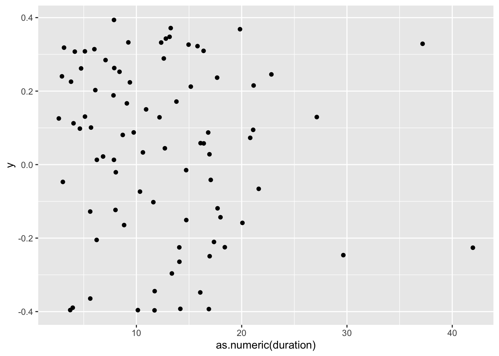

# Import data from '.csv'
read_csv("00_raw_data/gender_age.csv")
# Import data from any text file by defining the separator
read_delim("00_raw_data/gender_age.txt", delim = "|")7 Data Wrangling
Data wrangling — also called data cleaning, data remediation, or data munging—refers to a variety of processes designed to transform raw data into more readily used formats. The exact methods differ from project to project depending on the data you’re leveraging and the goal you’re trying to achieve. (Stobierski 2021)
You collected your data over months (and sometimes years), and all you want to know is whether your data makes sense and reveals something nobody would have ever expected. However, before we can truly go ahead with our analysis, it is essential to understand whether our data is ‘tidy’. What I mean is that our data is at the quality we would expect it to be and can be reliably used for data analysis. After all, the results of our research are only as good as our data and the methods we deploy to achieve the desired insights.
Very often, the data we receive is everything else but clean, and we need to check whether our data is fit for analysis and ensure it is in a format that is easy to handle. For small datasets, this is usually a brief exercise. However, I found myself cleaning data for a month because the dataset was spread out into multiple spreadsheets with different numbers of columns and odd column names that were not consistent. Thus, data wrangling is an essential first step in any data analysis. It is a step that cannot be skipped and has to be performed on every new dataset. If your background is in qualitative research, you likely conducted interviews which you had to transcribe. The process of creating transcriptions is comparable to data wrangling in quantitative datasets - and equally tedious.
Luckily, R provides many useful functions to make our lives easier. You will be in for a treat if you are like me and used to do this in Excel. It is a lot simpler using R to achieve a clean dataset.
Here is an overview of the different steps we usually work through before starting with our primary analysis. This list is certainly not exhaustive:
Import data,
Check data types,
Recode and arrange factors, i.e. categorical data, and
Run missing data diagnostics.
7.1 Import your data
The r4np package hosts several different datasets to work with, but at some point, you might want to apply your R knowledge to your own data. Therefore, an essential first step is to import your data into RStudio. There are three different methods, all of which are very handy:
Click on your data file in the Files pane and choose
Import Dataset.Use the
Import Datasetbutton in the Environment pane.Import your data calling one of the
readrfunctions in the Console or R script.
We will use the readr package for all three options. Using this package we can import a range of different file formats, including .csv, .tsv, .txt. If you want to import data from an .xlsx file, you need to use another package called readxl. Similarly, if you used SPSS, Stata or SAS files before and want to use them in R you can use the haven package. The following sections will primarily focus on using readr via RStudio or directly in your Console or R script.
7.1.1 Import data from the Files pane
This approach is by far the easiest. Let’s assume you have a dataset called gender_age.csv in your 00_raw_data folder. If you wish to import it, you can do the following:
Click on the name of the file.
Select
Import Dataset.A new window will open, and you can choose different options. You also see a little preview of how the data looks like. This is great if you are not sure whether you did it correctly.
You can change how data should be imported, but the default should be fine in most cases. Here is a quick breakdown of the most important options:
Nameallows you to change the object name, i.e. the name of the object this data will be assigned to. I often usedf_raw(dfstand fordata frame, which is how R calls such rectangular datasets).Skipis helpful if your data file starts with several empty rows at the top. You can remove them here.First Row as Namesis ticked by default. In most Social Science projects, we tend to have the name of the variables as the first row in our dataset.Trim Spacesremoves any unnecessary whitespace in your dataset. Leave it ticked.Open Data Viewerallows you to look at your imported dataset. I use it rarely, but it can be helpful at times.Delimiterdefines how your columns are separated from each other in your file. If it is a.csvfile, it would imply it is a ‘comma-separated value’, i.e.,. This setting can be changed for different files, depending on how your data is delimited. You can even use the optionOther…to specify a custom separation option.NAspecifies how missing values in your data are acknowledged. By default, empty cells in your data will be recognised as missing data.
Once you are happy with your choices, you can click on
Import.You will find your dataset in the Environment pane.
In the Console, you can see that R also provides the Column specification, which we need later when inspecting ‘data types’. readr automatically imports all text-based columns as chr, i.e. character values. However, this might not always be the correct data type. We will cover more of this aspect of data wrangling in Section 7.4.
7.1.2 Importing data from the Environment pane
The process of importing datasets from the Environment pane follows largely the one from the Files pane. Click on Import Dataset > From Text (readr)…. The only main difference lies in having to find the file using the Browse… button. The rest of the steps are the same as above.
Be aware that you will have to use the Environment pane for importing data from specific file types, e.g. .txt. The File pane would only open the file but not import the data for further processing.
7.1.3 Importing data using functions directly
If you organised your files well, it could be effortless and quick to use all the functions from readr directly. Here are two examples of how you can use readr to import your data. Make sure you have the package loaded.
You might be wondering whether you can use read_delim() to import .csv files too. The answer is ‘Yes, you can!’. In contrast to read_delim(), read_csv() sets the delimiter to , by default. This is mainly for convenience because .csv files are one of the most popular file formats used to store data.
You might also be wondering what a ‘delimiter’ is. When you record data in a plain-text file, it is easy to see where a new observation starts and ends because it is defined by a row in your file. However, we also need to tell our software where a new column starts, i.e. where a cell begins and ends. Consider the following example. We have a file that holds our data which looks like this:
idagegender
124male
256female
333maleThe first row we probably can still decipher as id, age, gender. However, the next row makes it difficult to understand which value represents the id of a participant and which value reflects the age of that participant. Like us, computer software would find it hard too to decide on this ambiguous content. Thus, we need to use delimiters to make it very clear which value belongs to which column. For example, in a .csv file, the data would be separated by a ,.
id,age,gender
1,24,male
2,56,female
3,33,maleConsidering our example from above, we could also use | as a delimiter, but this is very unusual.
id|age|gender
1|24|male
2|56|female
3|33|maleAn important advantage of this approach is the ability to load large data files much more quickly. The previous options offer a preview of your data, but loading this preview can take a long time for large datasets. Therefore, I highly recommend using the readr functions directly in the console or your R script to avoid frustration when importing large datasets.
There is a lot more to readr than could be covered in this book. If you want to know more about this R package, I highly recommend looking at the readr webpage.
7.2 Inspecting your data
For the rest of this chapter, we will use the World Value Survery data (Haerpfer et al. 2022) (wvs) from the r4np package. However, we do not know much about this dataset, and therefore we cannot ask any research questions worth investigating. Therefore, we need to look at what it contains. The first method of inspecting a dataset is to type the name of the object, i.e. wvs.
# Ensure you loaded the 'r4np' package first
library(r4np)
# Show the data in the console
wvs# A tibble: 8,564 × 7
`Participant ID` `Country name` Gender Age relationship_status
<dbl> <chr> <dbl> <dbl> <chr>
1 68070001 Bolivia, Plurinational Sta… 0 60 married
2 68070002 Bolivia, Plurinational Sta… 0 40 married
3 68070003 Bolivia, Plurinational Sta… 0 25 single
4 68070004 Bolivia, Plurinational Sta… 1 71 widowed
5 68070005 Bolivia, Plurinational Sta… 1 38 married
6 68070006 Bolivia, Plurinational Sta… 1 20 separated
7 68070007 Bolivia, Plurinational Sta… 0 39 single
8 68070008 Bolivia, Plurinational Sta… 1 19 single
9 68070009 Bolivia, Plurinational Sta… 0 20 single
10 68070010 Bolivia, Plurinational Sta… 1 37 married
# ℹ 8,554 more rows
# ℹ 2 more variables: Freedom.of.Choice <dbl>, `Satisfaction-with-life` <dbl>The result is a series of rows and columns. The first information we receive is: A tibble: 69,578 x 7. This indicates that our dataset has 69,578 observations (i.e. rows) and 9 columns (i.e. variables). This rectangular format is the one we encounter most frequently in Social Sciences (and probably beyond). If you ever worked in Microsoft Excel, this format will look familiar. However, rectangular data is not necessarily tidy data. Wickham (2014) (p. 4) defines tidy data as follows:
- Each variable forms a column.
- Each observation forms a row.
- Each type of observational unit forms a table.
Even though it might be nice to look at a tibble in the console, it is not particularly useful. Depending on your monitor size, you might only see a small number of columns, and therefore we do not get to see a complete list of all variables. In short, we hardly ever will find much use in inspecting data this way. Luckily other functions can help us.
If you want to see each variable covered in the dataset and their data types, you can use the function glimpse() from the dplyr package which is loaded as part of the tidyverse package.
glimpse(wvs)Rows: 8,564
Columns: 7
$ `Participant ID` <dbl> 68070001, 68070002, 68070003, 68070004, 68070…
$ `Country name` <chr> "Bolivia, Plurinational State of", "Bolivia, …
$ Gender <dbl> 0, 0, 0, 1, 1, 1, 0, 1, 0, 1, 1, 1, 1, 0, 1, …
$ Age <dbl> 60, 40, 25, 71, 38, 20, 39, 19, 20, 37, 42, 7…
$ relationship_status <chr> "married", "married", "single", "widowed", "m…
$ Freedom.of.Choice <dbl> 7, 8, 10, 5, 5, 5, 5, 10, 6, 9, 5, 8, 8, 7, 5…
$ `Satisfaction-with-life` <dbl> 5, 7, 8, 5, 7, 3, 3, 8, 7, 8, 9, 6, 7, 7, 4, …The output of glimpse shows us the name of each column/variable after the $, for example, `Participant ID`. The $ is used to lookup certain variables in our dataset. For example, if we want to inspect the column relationship_status only, we could write the following:
wvs$relationship_status [1] "married" "married"
[3] "single" "widowed"
[5] "married" "separated"
[7] "single" "single"
....When using glimpse() we find the recognised data type for each column, i.e. each variable, in <...>, for example <chr>. We will return to data types in Section 7.4. Lastly, we get examples of the values included in each variable. This output is much more helpful.
I use glimpse() very frequently for different purposes, for example:
to understand what variables are included in a dataset,
to check the correctness of data types,
to inspect variable names for typos or unconventional names,
to look up variable names.
There is one more way to inspect your data and receive more information about it by using a specialised R package. The skimr package is excellent in ‘skimming’ your dataset. It provides not only information about variable names and data types but also provides some descriptive statistics. If you installed the r4np package and called the function install_r4np(), you will have skimr installed already.
skimr::skim(wvs)The output in the Console should look like this:
As you can tell, there is a lot more information in this output. Many descriptive statistics that could be useful are already displayed. skim() provides a summary of the dataset and then automatically sorts the variables by data type. Depending on the data type, you also receive different descriptive statistics. As a bonus, the function also provides a histogram for numeric variables. However, there is one main problem: Some of the numeric variables are not numeric: Participant ID and Gender. Thus, we will have to correct the data types in a moment.
Inspecting your data in this way can be helpful to get a better understanding of what your data includes and spot problems with it. In addition, if you receive data from someone else, these methods are an excellent way to familiarise yourself with the dataset relatively quickly. Since I prepared this particular dataset for this book, I also made sure to provide documentation for it. You can access it by using ?wvs in the Console. This will open the documentation in the Help pane. Such documentation is available for every dataset we use in this book.
7.3 Cleaning your column names: Call the janitor
If you have eagle eyes, you might have noticed that most of the variable names in wvs are not consistent or easy to read/use.
# Whitespace and inconsistent capitalisation
Participant ID
Country name
Gender
Age
# Difficult to read
Freedom.of.Choice
Satisfaction-with-lifeFrom Section 5.5, you will remember that being consistent in writing your code and naming your objects is essential. The same applies, of course, to variable names. R will not break using the existing names, but it will save you a lot of frustration if we take a minute to clean the names and make them more consistent. Since we will use column names in almost every line of code we produce, it is best to standardise them and make them easier to read and write.
You are probably thinking: “This is easy. I just open the dataset in Excel and change all the column names.” Indeed, it would be a viable and easy option, but it is not very efficient, especially with larger datasets with many more variables. Instead, we can make use of the janitor package. By definition, janitor is a package that helps to clean up whatever needs cleaning. In our case, we want to tidy our column names. We can use the function clean_names() to achieve this. We store the result in a new object called wvs to keep those changes. The object will also show up in our Environment pane.
wvs_clean <- janitor::clean_names(wvs)
glimpse(wvs_clean)Rows: 8,564
Columns: 7
$ participant_id <dbl> 68070001, 68070002, 68070003, 68070004, 6807000…
$ country_name <chr> "Bolivia, Plurinational State of", "Bolivia, Pl…
$ gender <dbl> 0, 0, 0, 1, 1, 1, 0, 1, 0, 1, 1, 1, 1, 0, 1, 1,…
$ age <dbl> 60, 40, 25, 71, 38, 20, 39, 19, 20, 37, 42, 73,…
$ relationship_status <chr> "married", "married", "single", "widowed", "mar…
$ freedom_of_choice <dbl> 7, 8, 10, 5, 5, 5, 5, 10, 6, 9, 5, 8, 8, 7, 5, …
$ satisfaction_with_life <dbl> 5, 7, 8, 5, 7, 3, 3, 8, 7, 8, 9, 6, 7, 7, 4, 8,…Now that janitor has done its magic, we suddenly have easy to read variable names that are consistent with the ‘Tidyverse style guide’ (Wickham 2021).
If, for whatever reason, the variable names are still not looking the way you want, you can use the function rename() from the dplyr package to manually assign new variable names.
wvs_clean <-
wvs_clean |>
rename(satisfaction = satisfaction_with_life,
country = country_name)
glimpse(wvs_clean)Rows: 8,564
Columns: 7
$ participant_id <dbl> 68070001, 68070002, 68070003, 68070004, 68070005, …
$ country <chr> "Bolivia, Plurinational State of", "Bolivia, Pluri…
$ gender <dbl> 0, 0, 0, 1, 1, 1, 0, 1, 0, 1, 1, 1, 1, 0, 1, 1, 1,…
$ age <dbl> 60, 40, 25, 71, 38, 20, 39, 19, 20, 37, 42, 73, 32…
$ relationship_status <chr> "married", "married", "single", "widowed", "marrie…
$ freedom_of_choice <dbl> 7, 8, 10, 5, 5, 5, 5, 10, 6, 9, 5, 8, 8, 7, 5, 10,…
$ satisfaction <dbl> 5, 7, 8, 5, 7, 3, 3, 8, 7, 8, 9, 6, 7, 7, 4, 8, 5,…You are probably wondering what |> stands for. This symbol is called a ‘piping operator’ , and it allows us to chain multiple functions together by considering the output of the previous function. So, do not confuse <- with |>. Each operator serves a different purpose. The |> has become synonymous with the tidyverse approach to R programming and is the chosen approach for this book. Many functions from the tidyverse are designed to be chained together.
If we wanted to spell out what we just did, we could say:
wvs <-: We assigned whatever happened to the right of the assignment operator to the objectwvs.wvs |>: We defined the dataset we want to use with the functions defined after the|>.rename(satisfaction = satisfcation_with_life): We define a new namesatisfactionfor the columnsatisfaction_with_life. Notice that the order isnew_name = old_name. Here we also use=. A rare occasion where it makes sense to do so.
Just for clarification, the following two lines of code accomplish the same task. The only difference is that with |> we could chain another function right after it. So, you could say, it is a matter of taste which approach you prefer. However, in later chapters, it will become apparent why using |> is very advantageous.
# Renaming a column using '|>'
wvs_clean |> rename(satisfaction_new = satisfaction)
# Renaming a column without '|>'
rename(wvs_clean, satisfaction_new = satisfaction)Since you will be using the pipe operator very frequently, it is a good idea to remember the keyboard shortcut for it: Ctrl+Shift+M for PC and Cmd+Shift+M for Mac.
Besides |> operator you might also find that some sources use a different pipe operator %>%. The original tidyverse approach used %>% before R introduced their own pipe operator. In short: You can use both of them if you like, but in 90% of cases, you probably will be fine using the one that comes shipped with RStudio by default, i.e. |>. More and more R resources adopt the |> operator and there are only few situations where %>% is preferred. For the content of this book and the techniques demonstrated here, you can use both operators interchangeably and the code will work just fine.
7.4 Data types: What are they and how can you change them
When we inspected our data, I mentioned that some variables do not have the correct data type. You might be familiar with different data types by classifying them as:
Nominal data, which is categorical data of no particular order,
Ordinal data, which is categorical data with a defined order, and
Quantitative data, which is data that usually is represented by numeric values.
In R we have a slightly different distinction:
character/<chr>: Textual data, for example the text of a tweet.factor/<fct>: Categorical data with a finite number of categories with no particular order.ordered/<ord>: Categorical data with a finite number of categories with a particular order.double/<dbl>: Numerical data with decimal places.integer/<int>: Numerical data with whole numbers only (i.e. no decimals).logical/<lgl>: Logical data, which only consists of valuesTRUEandFALSE.date/date: Data which consists of dates, e.g.2021-08-05.date-time/dttm: Data which consists of dates and times, e.g.2021-08-05 16:29:25 BST.
For a complete list of data types, I recommend looking at ‘Column Data Types’ (Müller and Wickham 2021).
R has a fine-grained categorisation of data types. The most important distinction, though, lies between <chr>, <fct>/<ord> and <dbl> for most datasets in the Social Sciences. Still, it is good to know what the abbreviations in your tibble mean and how they might affect your analysis.
Now that we have a solid understanding of different data types, we can look at our dataset and see whether readr classified our variables correctly.
glimpse(wvs_clean)Rows: 8,564
Columns: 7
$ participant_id <dbl> 68070001, 68070002, 68070003, 68070004, 68070005, …
$ country <chr> "Bolivia, Plurinational State of", "Bolivia, Pluri…
$ gender <dbl> 0, 0, 0, 1, 1, 1, 0, 1, 0, 1, 1, 1, 1, 0, 1, 1, 1,…
$ age <dbl> 60, 40, 25, 71, 38, 20, 39, 19, 20, 37, 42, 73, 32…
$ relationship_status <chr> "married", "married", "single", "widowed", "marrie…
$ freedom_of_choice <dbl> 7, 8, 10, 5, 5, 5, 5, 10, 6, 9, 5, 8, 8, 7, 5, 10,…
$ satisfaction <dbl> 5, 7, 8, 5, 7, 3, 3, 8, 7, 8, 9, 6, 7, 7, 4, 8, 5,…readr did a great job in identifying all the numeric variables. However, by default, readr imports all variables that include text as <chr>. It appears as if this is not entirely correct for our dataset. The variables country, gender and relationship_status specify a finite number of categories. Therefore they should be classified as a factor. The variable participant_id is represented by numbers, but its meaning is also rather categorical. We would not use the ID numbers of participants to perform additions or multiplications. This would make no sense. Therefore, it might be wise to turn them into a factor, even though we likely will not use it in our analysis and would make no difference. However, I am a stickler for those kinds of things.
To perform the conversion, we need to use two new functions from dplyr:
mutate(): Changes, i.e. ‘mutates’, a variable.as_factor(): Converts data from one type into afactor.
If we want to convert all variables in one go, we can put them into the same function, separated by a ,.
wvs_clean <-
wvs_clean |>
mutate(country = as_factor(country),
gender = as_factor(gender),
relationship_status = as_factor(relationship_status),
participant_id = as_factor(participant_id)
)
glimpse(wvs_clean)Rows: 8,564
Columns: 7
$ participant_id <fct> 68070001, 68070002, 68070003, 68070004, 68070005, …
$ country <fct> "Bolivia, Plurinational State of", "Bolivia, Pluri…
$ gender <fct> 0, 0, 0, 1, 1, 1, 0, 1, 0, 1, 1, 1, 1, 0, 1, 1, 1,…
$ age <dbl> 60, 40, 25, 71, 38, 20, 39, 19, 20, 37, 42, 73, 32…
$ relationship_status <fct> married, married, single, widowed, married, separa…
$ freedom_of_choice <dbl> 7, 8, 10, 5, 5, 5, 5, 10, 6, 9, 5, 8, 8, 7, 5, 10,…
$ satisfaction <dbl> 5, 7, 8, 5, 7, 3, 3, 8, 7, 8, 9, 6, 7, 7, 4, 8, 5,…The output in the console shows that we successfully performed the transformation and our data types are as we intended them to be. Mission accomplished.
If you need to convert all <chr> columns you can use mutate_if(is.character, as_factor) instead. This function will look at each column and if it is a character type variable, it will convert it into a factor. However, use this function only if you are certain that all character columns need converting. If this is the case, it can be a huge time-saver. Here is the corresponding code snippet:
wvs_clean |>
mutate_if(is.character, as_factor)Lastly, there might be occasions where you want to convert data into other formats than from <chr> to <fct>. Similar to as_factor() there are more functions available to transform your data into the correct format of your choice:
as.integer(): Converts values into integers, i.e. without decimal places. Be aware that this function does not round values as you might expect. Instead, it removes any decimals as if they never existed.as.numeric(): Converts values into numbers with decimals if they are present.as.character(): Converts values to string values, even if they are numbers. If you usereadrto import your data, you will not often use this function becausereadrimports unknown data types as<chr>by default.
All these function can be used in the same as we did before. Here are three examples to illustrated their use.
# Conversion to character values
converted_data <-
wvs_clean |>
mutate(participant_id = as.character(participant_id),
age = as.character(age))
glimpse(converted_data)Rows: 8,564
Columns: 7
$ participant_id <chr> "68070001", "68070002", "68070003", "68070004", "6…
$ country <fct> "Bolivia, Plurinational State of", "Bolivia, Pluri…
$ gender <fct> 0, 0, 0, 1, 1, 1, 0, 1, 0, 1, 1, 1, 1, 0, 1, 1, 1,…
$ age <chr> "60", "40", "25", "71", "38", "20", "39", "19", "2…
$ relationship_status <fct> married, married, single, widowed, married, separa…
$ freedom_of_choice <dbl> 7, 8, 10, 5, 5, 5, 5, 10, 6, 9, 5, 8, 8, 7, 5, 10,…
$ satisfaction <dbl> 5, 7, 8, 5, 7, 3, 3, 8, 7, 8, 9, 6, 7, 7, 4, 8, 5,…# Conversion to numeric values
converted_data |>
mutate(age = as.numeric(age))# A tibble: 8,564 × 7
participant_id country gender age relationship_status freedom_of_choice
<chr> <fct> <fct> <dbl> <fct> <dbl>
1 68070001 Bolivia, P… 0 60 married 7
2 68070002 Bolivia, P… 0 40 married 8
3 68070003 Bolivia, P… 0 25 single 10
4 68070004 Bolivia, P… 1 71 widowed 5
5 68070005 Bolivia, P… 1 38 married 5
6 68070006 Bolivia, P… 1 20 separated 5
7 68070007 Bolivia, P… 0 39 single 5
8 68070008 Bolivia, P… 1 19 single 10
9 68070009 Bolivia, P… 0 20 single 6
10 68070010 Bolivia, P… 1 37 married 9
# ℹ 8,554 more rows
# ℹ 1 more variable: satisfaction <dbl># Convert numeric values to integers
numeric_values <- tibble(values = c(1.3, 2.6, 3.8))
numeric_values |>
mutate(integers = as.integer(values))# A tibble: 3 × 2
values integers
<dbl> <int>
1 1.3 1
2 2.6 2
3 3.8 37.5 Handling factors
Factors are an essential way to classify observations in our data in different ways. In terms of data wrangling, there are usually at least three steps we take to prepare them for analysis:
- Recoding factors,
- Reordering factor levels, and
- Removing factor levels
7.5.1 Recoding factors
Another common problem we have to tackle when working with data is their representation in the dataset. For example, gender could be measured as male and female1 or as 0 and 1. R does not mind which way you represent your data, but some other software does. Therefore, when we import data from somewhere else, the values of a variable might not look the way we want. The practicality of having your data represented accurately as what they are, becomes apparent when you intend to create tables and plots.
For example, we might be interested in knowing how many participants in wvs_clean were male and female. The function count() from dplyr does precisely that. We can sort the results, i.e. n, in descending order by including sort = TRUE. By default, count() arranges our variable gender in alphabetical order.
wvs_clean |> count(gender, sort = TRUE)# A tibble: 2 × 2
gender n
<fct> <int>
1 1 4348
2 0 4216Now we know how many people were male and female and how many did not disclose their gender. Or do we? The issue here is that you would have to know what 0 and 1 stand for. Surely you would have a coding manual that gives you the answer, but it seems a bit of a complication. For gender, this might still be easy to remember, but can you recall the ID numbers for 48 countries?
It certainly would be easier to replace the 0s and 1s with their corresponding labels. This can be achieved with a simple function called fct_recode() from forcats. However, since we ‘mutate’ a variable into something else, we also have to use the mutate() function.
wvs_clean <-
wvs_clean |>
mutate(gender = fct_recode(gender,
"male" = "0",
"female" = "1"))If you have been following along very carefully, you might spot one oddity in this code: "0" and "1". You likely recall that in Chapter 5, I mentioned that we use "" for character values but not for numbers. So what happens if we run the code and remove "".
wvs_clean |>
mutate(gender = fct_recode(gender,
"male" = 0,
"female" = 1))Error in `mutate()`:
ℹ In argument: `gender = fct_recode(gender, male = 0, female = 1)`.
Caused by error in `fct_recode()`:
! Each element of `...` must be a named string.
ℹ Problems with 2 arguments: male and femaleThe error message is easy to understand: fct_recode() only expects strings as input and not numbers. R recognises 0 and 1 as numbers, but fct_recode() only converts a factor value into another factor value and since we ‘mutated’ gender from a numeric variable to a factor variable, all values of gender are no longer numbers. To refer to a factor level (i.e. one of the categories in our factor), we have to use "". In other words, data types matter and are often a source of problems with your code. Thus, always pay close attention to them. For now, it is important to remember that factor levels are always string values, i.e. text.
Now that we have change the factor levels to our liking, we can rerun our analysis and generate a frequency table for gender. This time we receive a much more readable output.
wvs_clean |> count(gender)# A tibble: 2 × 2
gender n
<fct> <int>
1 male 4216
2 female 4348Another benefit of going through the trouble of recoding your factors is the readability of your plots. For example, we could quickly generate a bar plot based on the above table and have appropriate labels instead of 0 and 1.
wvs_clean |>
count(gender) |>
ggplot(aes(gender, n)) +
geom_col()
male and female
Plots are an excellent way to explore your data and understand relationships between variables. We will learn more about this when we start to perform analytical steps on our data (see Chapter 8 and beyond).
Another use case for recoding factors could be for purely cosmetic reasons. For example, when looking through our dataset, we might notice that some country names are very long and do not look great in data visualisations or tables. Thus, we could consider shortening them which is a slightly more advanced process.
First, we need to find out which country names are particularly long. There are 48 countries in this dataset, so it could take some time to look through them all. Instead, we could use the function filter() from dplyr to pick only countries with a long name. However, this poses another problem: How can we tell the filter function to pick only country names with a certain length? Ideally, we would want a function that does the counting for us. As you probably anticipated, there is a package called stringr, which also belongs to the tidyverse, and has a function that counts the number of characters that represent a value in our dataset: str_length(). This function takes any character variable and returns the length of it. This also works with factors because this function can ‘coerce’ it into a character, i.e. it just ignores that it is a factor and looks at it as if it was a regular character variable. Good news for us, because now we can put the puzzle pieces together.
wvs_clean |>
filter(str_length(country) >= 15) |>
count(country)# A tibble: 3 × 2
country n
<fct> <int>
1 Bolivia, Plurinational State of 2067
2 Iran, Islamic Republic of 1499
3 Korea, Republic of 1245I use the value 15 arbitrarily after some trial and error. You can change the value and see which other countries would show up with a lower threshold. However, this number seems to do the trick and returns three countries that seem to have longer names. All we have to do is replace these categories with new ones the same way we recoded gender.
wvs_clean <-
wvs_clean |>
mutate(country = fct_recode(country,
"Bolivia" = "Bolivia, Plurinational State of",
"Iran" = "Iran, Islamic Republic of",
"Korea" = "Korea, Republic of"))Now we have country names that nicely fit into tables and plots we want to create later and do not have to worry about it later.
7.5.2 Reordering factor levels
Besides changing factor levels, it is also common that we want to reconsider the arrangement of these levels. To inspect the order of factor levels, we can use the function fct_unique() from the forcats package and provide a factor variable, e.g. gender, in the wvs_clean dataset.
fct_unique(wvs_clean$gender)[1] male female
Levels: male femaleA reason for changing the order of factor levels could be to arrange how factor levels are displayed in plots. For example, Figure 7.1 shows the bar of male participants first, but instead, we might want to show female participants first. The forcats package offers several options to rearrange factor levels based on different conditions. Depending on the circumstances, one or the other function might be more efficient. Four of these functions I tend to use fairly frequently:
fct_relevel(): To reorder factor levels by hand.fct_reorder(): To reorder factor levels based on another variable of interest.fct_rev(): To reverse the order of factor levels.fct_infreq(): To reorder factor levels by frequency of appearance in our dataset.
Each function requires slightly different arguments. If we wanted to change the order of our factor levels, we could use all four of them to achieve the same result (in our case):
# Reorder by hand
wvs_clean |>
count(gender) |>
ggplot(aes(x = fct_relevel(gender, "female", "male"),
y = n)) +
geom_col()
# Reorder by another variable, e.g. the frequency 'n'
wvs_clean |>
count(gender) |>
ggplot(aes(x = fct_reorder(gender, n, .desc = TRUE),
y = n)) +
geom_col()
The function fct_infreq() is particularly convenient when looking at frequencies, because it will automatically order factor levels according to their size. Thus, we can skip the part where we count() factor levels and use geom_bar() instead.
# Reorder based on frequency of appearance
wvs_clean |>
ggplot(aes(x = fct_infreq(gender))) +
geom_bar()
# Reverse the order of factor levels
wvs_clean |>
count(gender) |>
ggplot(aes(x = fct_rev(gender),
y = n)) +
geom_col()
There are many ways to rearrange factors, and it very much depends on the data you have and what you wish to achieve. For most of my plots, I tend to revert to a basic R function, i.e. reorder(), which is much shorter to type and does essentially the same as fct_reorder(). There is no right or wrong in this regard, just personal taste.
7.5.3 Removing factor levels
When we work with factors, it can sometimes happen that we have factor levels that are not linked to any of our observations in the dataset, but when we try to perform certain analytical steps they might get in the way (for example in Section 13.3.1). Therefore it is important to perform some housekeeping and remove unneeded factor levels.
# A dataset which contains a factor with 4 levels
data <- tibble(gender = factor(c("female",
"male",
"non-binary"),
# Setting the factor levels
levels = c("female",
"male",
"non-binary",
"unknown")
)
)
data# A tibble: 3 × 1
gender
<fct>
1 female
2 male
3 non-binaryThe data dataframe contains the variable gender which has four levels, but only three levels are represented in the data, i.e. the factor level unknown matches none of our observations in the dataset. However, it is still there:
# All four factors are still here
levels(data$gender)[1] "female" "male" "non-binary" "unknown" If we want to remove the unused factor level we have two options: We can either use droplevels() or fct_drop() from the forcats package. A nice little perk of the droplevels() function is that it can remove unused factor levels from all factors in the dataset. Here are the different options in action:
# Option 1: Using 'droplevels()
data_3_lvls <-
data |>
mutate(gender = droplevels(gender))
levels(data_3_lvls$gender)[1] "female" "male" "non-binary"# Option 2: Using 'fct_drop()
data_3_lvls <-
data |>
mutate(gender = fct_drop(gender))
levels(data_3_lvls$gender)[1] "female" "male" "non-binary"# Removing unused factor levels of all factors
data_3_levels <-
data |> droplevels()
levels(data_3_lvls$gender)[1] "female" "male" "non-binary"In my experience, it is always good to remove unused categories (i.e. levels) because sometimes they can lead to unexpected outcomes. Thus, it is a matter of good practice than an absolute necessity. Besides, it is fairly easy to tidy your factors with the above functions.
7.6 Handling dates, times and durations
There are many reasons why we encounter dates, times and durations in our research. The most apparent reason for handling dates and times is longitudinal studies that focus on change over time. Therefore, at least one of our variables would have to carry a timestamp. When it comes to data cleaning and wrangling, there are usually two tasks we need to perform:
Convert data into a suitable format for further analysis, and
Perform computations with dates and times, e.g. computing the duration between two time points.
The following sections will provide some guidance on solving commonly occurring issues and how to solve them.
7.6.1 Converting dates and times for analysis
No matter which data collection tool you use, you likely encounter differences in how various software report dates and times back to you. Not only is there a great variety in formats in which dates and times are reported, but there are also other issues that one has to take care of, e.g. time zone differences. Here are some examples of how dates could be reported in your data:
26 November 2022
26 Nov 2022
November, 26 2022
Nov, 26 2022
26/11/2022
11/26/2022
2022-11-26
20221126It would be nice if there was a standardised method of recording dates and times and, in fact, there is one: ISO 8601. But unfortunately, not every software, let alone scholar, necessarily adheres to this standard. Luckily there is a dedicated R package that solely deals with these issues called lubridate, which is also part of the tidyverse. It helps reformat data into a coherent format and takes care of other essential aspects, such as ‘time zones, leap days, daylight savings times, and other time related quirks’ (Grolemund and Wickham 2011). Here, we will primarily focus on the most common issues, but I highly recommend looking at the ‘lubridate’ website to see what else the package has to offer.
Let’s consider the dates (i.e. the data type date) shown above and try to convert them all into the same format. To achieve this we can use three different functions, i.e. dmy(), mdy() and ymd(). It is probably very obvious what these letters stand for:
dfor day,mfor month, andyfor year.
All we have to do is identify the order in which the dates are presented in your dataset, and the lubridate package will do its magic to standardise the format.
library(lubridate)
# All of the below will yield the same output
dmy("26 November 2022")[1] "2022-11-26"dmy("26 Nov 2022")[1] "2022-11-26"mdy("November, 26 2022")[1] "2022-11-26"mdy("Nov, 26 2022")[1] "2022-11-26"dmy("26/11/2022")[1] "2022-11-26"mdy("11/26/2022")[1] "2022-11-26"ymd("2022-11-26")[1] "2022-11-26"ymd("20221126")[1] "2022-11-26"Besides dates, we sometimes also have to deal with times. For example, when did someone start a survey and finish it. If you frequently work with software like Qualtrics, SurveyMonkey, etc., you are often provided with such information. From a diagnostic perspective, understanding how long it took someone to complete a questionnaire can provide valuable insights into survey optimisation and design or show whether certain participants properly engaged with your data collection tool. In R, we can use either time or dttm (date-time) as a data type to capture hours, minutes and seconds. The lubridate package handles time similarly to date with easily recognisable abbreviations:
hfor hour,mfor minutes, andsfor seconds.
Here is a simple example that demonstrates how conveniently lubridate manages to handle even the most outrages ways of specifying times:
dinner_time <- tibble(time = c("17:34:21",
"17:::34:21",
"17 34 21",
"17 : 34 : 21")
)
dinner_time |> mutate(time_new = hms(time))# A tibble: 4 × 2
time time_new
<chr> <Period>
1 17:34:21 17H 34M 21S
2 17:::34:21 17H 34M 21S
3 17 34 21 17H 34M 21S
4 17 : 34 : 21 17H 34M 21SLastly, dttm data types combine both: date and time. To illustrate how we can work with this format we can look at some actual data from a questionnaire. For example, the `quest_time` dataset has information about questionnaire completion dates and times..
quest_time# A tibble: 84 × 3
id start end
<dbl> <chr> <chr>
1 1 12/05/2016 20:46 12/05/2016 20:49
2 2 19/05/2016 22:08 19/05/2016 22:25
3 3 20/05/2016 07:05 20/05/2016 07:14
4 4 13/05/2016 08:59 13/05/2016 09:05
5 5 13/05/2016 11:25 13/05/2016 11:29
6 6 13/05/2016 11:31 13/05/2016 11:37
7 7 20/05/2016 11:29 20/05/2016 11:45
8 8 20/05/2016 14:07 20/05/2016 14:21
9 9 20/05/2016 14:55 20/05/2016 15:01
10 10 20/05/2016 16:12 20/05/2016 16:25
# ℹ 74 more rowsWhile it all looks neat and tidy, keeping dates and times as a chr is not ideal, especially if we want to use it to conduct further analysis. Therefore, it would be important to transform these variables into the appropriate dttm format. We can use the function dmy_hm() similar to previous functions we used.
quest_time_clean <-
quest_time |>
mutate(start = dmy_hm(start),
end = dmy_hm(end)
)
quest_time_clean# A tibble: 84 × 3
id start end
<dbl> <dttm> <dttm>
1 1 2016-05-12 20:46:00 2016-05-12 20:49:00
2 2 2016-05-19 22:08:00 2016-05-19 22:25:00
3 3 2016-05-20 07:05:00 2016-05-20 07:14:00
4 4 2016-05-13 08:59:00 2016-05-13 09:05:00
5 5 2016-05-13 11:25:00 2016-05-13 11:29:00
6 6 2016-05-13 11:31:00 2016-05-13 11:37:00
7 7 2016-05-20 11:29:00 2016-05-20 11:45:00
8 8 2016-05-20 14:07:00 2016-05-20 14:21:00
9 9 2016-05-20 14:55:00 2016-05-20 15:01:00
10 10 2016-05-20 16:12:00 2016-05-20 16:25:00
# ℹ 74 more rowsWhile the difference between this format and the previous one is relatively marginal and unimpressive, the main benefit of this conversation becomes apparent when we perform operations on these variables, e.g. computing the time it took participants to complete the questionnaire.
7.6.2 Computing durations with dates, times and date-time variables
Once we have ‘corrected’ our variables to show as dates, times and date-times, we can perform further analysis and ask important questions about durations, periods and intervals of observations.
Let’s consider the quest_time dataset which we just prepared. As mentioned earlier, it is often essential to understand how long it took participants to complete a given questionnaire. Therefore we would want to compute the duration based on the start and end time.
df_duration <-
quest_time_clean |>
mutate(duration = end - start)
df_duration# A tibble: 84 × 4
id start end duration
<dbl> <dttm> <dttm> <drtn>
1 1 2016-05-12 20:46:00 2016-05-12 20:49:00 3 mins
2 2 2016-05-19 22:08:00 2016-05-19 22:25:00 17 mins
3 3 2016-05-20 07:05:00 2016-05-20 07:14:00 9 mins
4 4 2016-05-13 08:59:00 2016-05-13 09:05:00 6 mins
5 5 2016-05-13 11:25:00 2016-05-13 11:29:00 4 mins
6 6 2016-05-13 11:31:00 2016-05-13 11:37:00 6 mins
7 7 2016-05-20 11:29:00 2016-05-20 11:45:00 16 mins
8 8 2016-05-20 14:07:00 2016-05-20 14:21:00 14 mins
9 9 2016-05-20 14:55:00 2016-05-20 15:01:00 6 mins
10 10 2016-05-20 16:12:00 2016-05-20 16:25:00 13 mins
# ℹ 74 more rowsFrom these results, it seems that some participants have either super-humanly fast reading skills or did not engage with the questionnaire. To get a better overview, we can plot duration to see the distribution better.
df_duration |>
ggplot(aes(x = as.numeric(duration),
y = 0)) +
geom_jitter()
For now, you should not worry about what this code means but rather consider the interpretation of the plot, i.e. that most participants (represented by a black dot) needed less than 20 minutes to complete the questionnaire. Depending on the length of your data collection tool, this could either be good or bad news. Usually, the shorter the questionnaire can be, the higher the response rate, unless you have incentives for participants to complete a longer survey.
In Chapter 8, we will cover data visualisations like this boxplot in greater detail. If you cannot wait any longer and want to create your own visualisations, you are welcome to skip ahead. However, several data visualisations are awaiting you in the next chapter as well.
7.7 Dealing with missing data
There is hardly any Social Sciences project where researchers do not have to deal with missing data. Participants are sometimes unwilling to complete a questionnaire or miss the second round of data collection entirely, e.g. in longitudinal studies. It is not the purpose of this chapter to delve into all aspects of analysing missing data but provide a solid starting point. There are mainly three steps involved in dealing with missing data:
Mapping missing data,
Identifying patterns of missing data, and
Replacing or removing missing data
7.7.1 Mapping missing data
Every study that intends to be rigorous will have to identify how much data is missing because it affects the interpretability of our available data. In R, this can be achieved in multiple ways, but using a specialised package like naniar does help us to do this very quickly and systematically. First, we have to load the naniar package, and then we use the function vis_miss() to visualise how much and where exactly data is missing.
library(naniar)
vis_miss(wvs_clean)
naniar
naniar plays along nicely with the tidyverse approach of programming. As such, it would also be possible to write wvs |> vis_miss().
As we can see, 99,7% of our dataset is complete, and we are only missing 0.3%. The dark lines (actually blocks) refer to missing data points. On the x-axis, we can see all our variables, and on the y-axis, we see our observations. This is the same layout as our rectangular dataset: Rows are observations, and columns are variables. Overall, this dataset appears relatively complete (luckily). In addition, we can see the percentage of missing data per variable. freedom_of_choice is the variable with the most missing data, i.e. 0.79%. Still, the amount of missing data is not very large.
When working with larger datasets, it might also be helpful to rank variables by their degree of missing data to see where the most significant problems lie.
gg_miss_var(wvs_clean)
As we already know from the previous data visualisation, freedom_of_choice has the most missing data points, while participant_id, and country_name have no missing values. If you prefer to see the actual numbers instead, we can use a series of functions that start with miss_ (for a complete list of all functions, see the reference page of naniar). For example, to retrieve the numeric values which are reflected in the plot above, we can write the following:
# Summarise the missingness in each variable
miss_var_summary(wvs_clean)# A tibble: 7 × 3
variable n_miss pct_miss
<chr> <int> <num>
1 freedom_of_choice 117 1.37
2 satisfaction 36 0.420
3 relationship_status 19 0.222
4 participant_id 0 0
5 country 0 0
6 gender 0 0
7 age 0 0 I tend to prefer data visualisations over numerical results for mapping missing data, especially in larger datasets with many variables. This also has the benefit that patterns of missing data can be more easily identified as well.
7.7.2 Identifying patterns of missing data
If you find that your data ‘suffers’ from missing data, it is essential to answer another question: Is data missing systematically? This is quite an important diagnostic step since systematically missing data would imply that if we remove these observations from our dataset, we likely produce wrong results. The following section elaborate on this aspect of missing data. In general, we can distinguish missing data based on how it is missing, i.e.
missing completely at random (MCAR),
missing at random (MAR), and
missing not at random (MNAR). (Rubin 1976)
7.7.2.1 Missing completely at random (MCAR)
Missing completely at random (MCAR) means that neither observed nor missing data can systematically explain why data is missing. It is a pure coincidence how data is missing, and there is no underlying pattern.
The naniar package comes with the very popular Little’s MCAR test (Little 1988), which provides insights into whether our data is missing completely at random. Thus, we can call the function mcar_test() and inspect the result.
wvs_clean |>
# Remove variables which do not reflect a response
select(-participant_id) |>
mcar_test()# A tibble: 1 × 4
statistic df p.value missing.patterns
<dbl> <dbl> <dbl> <int>
1 113. 26 7.66e-13 7When you run such a test, you have to ensure that variables that are not part of the data collection process are removed. In our case, the participant_id is generated by the researcher and does not represent an actual response by the participants. As such, we need to remove it using select() before we can run the test. A - inverts the meaning of select(). While select(participant_id) would do what it says, i.e. include it as the only variable in the test, select(-participant_id) results in selecting everything but this variable in our test. You will find it is sometimes easier to remove a variable with select() rather than listing all the variables you want to keep.
Since the p.value of the test is so small that it got rounded down to 0, i.e. \(p<0.0001\), we have to assume that our data is not missing completely at random. If we found that \(p>0.05\), we would have confirmation that data are missing completely at random. We will cover p-values and significance tests in more detail in Section 10.3.
7.7.2.2 Missing at random (MAR)
Missing at random (MAR) refers to a situation where the observed data can explain missing data, but not any unobserved data. Dong and Peng (2013) (p. 2) provide a good example when this is the case:
Let’s suppose that students who scored low on the pre-test are more likely to drop out of the course, hence, their scores on the post-test are missing. If we assume that the probability of missing the post-test depends only on scores on the pre-test, then the missing mechanism on the post-test is MAR. In other words, for students who have the same pre-test score, the probability of (them) missing the post-test is random.
Thus, the main difference between MCAR and MAR data lies in the fact that we can observe some patterns of missing data if data is MAR. These patterns are only based on data we have, i.e. observed data. We also assume that no unobserved variables can explain these or other patterns.
Accordingly, we first look into variables with no missing data and see whether they can explain our missing data in other variables. For example, we could investigate whether missing data in freedom_of_choice is attributed to specific countries.
wvs_clean |>
group_by(country) |>
filter(is.na(freedom_of_choice)) |>
count(sort = TRUE)# A tibble: 4 × 2
# Groups: country [4]
country n
<fct> <int>
1 Japan 47
2 Bolivia 40
3 Egypt 23
4 Iran 7It seems four countries have exceptionally high numbers of missing data for freedom_of_choice: Japan, Brazil, New Zealand, Russia and Bolivia. Why this is the case lies beyond this dataset and is something only the researchers themselves could explain. Collecting data in different countries is particularly challenging, and one is quickly faced with different unfavourable conditions. Furthermore, the missing data is not completely random because we have some first evidence that the location of data collection might have affected its completeness.
Another way of understanding patterns of missing data can be achieved by looking at relationships between missing values, for example, the co-occurrence of missing values across different variables. This can be achieved by using upset plots. An upset plot consists of three parts: Set size, intersection size and a Venn diagram which defines the intersections.
gg_miss_upset(wvs_clean)
The most frequent combination of missing data in our dataset occurs when only freedom_of_choice is missing (the first column), but nothing else. Similar results can be found for relationships_status and age. The first combination of missing data is defined by two variables: satisfaction and freedom_of_choice. In total, 107 participants had satisfaction and freedom_of_choice missing but nothing else.
The ‘set size’ shown in the upset plot refers to the number of missing values for each variable in the diagram. This corresponds to what we have found when looking at Figure 7.3.
Our analysis also suggests that values are not completely randomly missing but that we have data to help explain why they are missing.
7.7.2.3 Missing not at random (MNAR)
Lastly, missing not at random (MNAR) implies that data is missing systematically and that other variables or reasons exist that explain why data is missing. Still, they are not fully known to us. In questionnaire-based research, an easily overlooked reason that can explain missing data is the ‘page-drop-off’ phenomenon. In such cases, participants stop completing a questionnaire once they advance to another page. Figure 7.4 shows this very clearly for a large scale project where an online questionnaire was used. After almost every page break in the questionnaire, some participants decided to discontinue. Finding these types of patterns is difficult when only working with numeric values. Thus, it is always advisable to visualise your data as well. Such missing data is linked to the design of the data collection tool.
Defining whether a dataset is MNAR or not is mainly achieved by ruling out MCAR and MAR assumptions. It is not possible to test whether missing data is MNAR, unless we have more information about the underlying population available (Ginkel et al. 2020).
We have sufficient evidence that our data is MAR as was shown above, because we managed to identify some relationships between unobserved and observed data. In practice, it is very rare to find datasets that are truly MCAR (Buuren 2018). Therefore we might consider ‘imputation’ as a possible strategy to solve our missing data problem. More about imputation in the next Chapter.
If you are looking for more inspiration of how you could visualise and identify patterns of missingness in your data, you might find the ‘Gallery’ of the naniar website particularly useful.
7.7.3 Replacing or removing missing data
Once you determined which pattern of missing data applies to your dataset, it is time to evaluate how we want to deal with those missing values. Generally, you can either keep the missing values as they are, replace them or remove them entirely.
Jakobsen et al. (2017) provide a rule of thumb of 5% where researchers can consider missing data as negligible, i.e. we can ignore the missing values because they won’t affect our analysis in a significant way. They also argue that if the proportion of missing data exceeds 40%, we should also only work with our observed data. However, with such a large amount of missing data, it is questionable whether we can rely on our analysis as much as we want to. If the missing data lies somewhere in-between this range, we need to consider the missing data pattern at hand.
If data is MCAR, we could remove missing data. This process is called ‘listwise deletion’, i.e. you remove all data from a participant with missing data. As just mentioned, removing missing values is only suitable if you have relatively few missing values in your dataset (Schafer 1999), as is the case with the wvs dataset. There are additional problems with deleting observations listwise, many of which are summarised by Buuren (2018) in his introduction. Usually, we try to avoid removing data as much as possible. If you wanted to perform listwise deletion, it can be done with a single function call: na.omit() from the built-in stats package. Alternatively, you could also use drop_na() from the tidyr package, which is automatically loaded when used library(tidyverse). Here is an example of how we can apply these two functions to achieve the same effect.
# No more missing data in this plot
wvs_clean |> na.omit() |> vis_miss()
# Here is the alternative method with drop_na()
wvs_clean |> drop_na() |> vis_miss()
# How many observations are left after we removed all missing data?
wvs_clean |> na.omit() |> count()# A tibble: 1 × 1
n
<int>
1 8418If you wanted to remove the missing data without the plot, you could use wvs_no_na <- na.omit(wvs) or wvs_no_na <- drop_na(). However, I always recommend ‘saving’ the result in a new object to ensure we keep the original data available. This can be helpful when trying to compare how this decision affects my analysis, i.e. I can run the analysis with and without missing data removed. For the wvs dataset, using na.omit() does not seem to be the best option.
Based on our analysis of the wvs dataset (by no means complete!), we could assume that data is MAR. In such cases, it is possible to ‘impute’ the missing values, i.e. replacing the missing data with computed scores. This is possible because we can model the missing data based on variables we have. We cannot model missing data based on variables we have not measured in our study for obvious reasons.
You might be thinking: “Why would it make data better if we ‘make up’ numbers? Is this not cheating?” Imputation of missing values is a science in itself. There is plenty to read about the process of handling missing data, which would reach far beyond the scope of this book. However, the seminal work of Buuren (2018), Dong and Peng (2013) and Jakobsen et al. (2017) are excellent starting points. In short: Simply removing missing data can lead to biases in your data, e.g. if we removed missing data in our dataset, we would mainly exclude participants from Japan, Brazil, New Zealand, Russia and Bolivia (as we found out earlier). While imputation is not perfect, it can produce more reliable results than not using imputation at all, assuming our data meets the requirements for such imputation.
Even though our dataset has only a minimal amount of missing data (relative to the entire size), we can still use imputation. There are many different ways to approach this task, one of which is ‘multiple imputation’. As highlighted by Ginkel et al. (2020), multiple imputation has not yet reached the same popularity as listwise deletion, despite its benefits. The main reason for this lies in the complexity of using this technique. There are many more approaches to imputation, and going through them all in detail would be impossible and distract from the book’s main purpose. Still, I would like to share some interesting packages with you that use different imputation methods:
mice (Uses multivariate imputation via chained equations)
Amelia (Uses a bootstrapped-based algorithm)
missForest (Uses a random forest algorithm)
Hmisc (Uses additive regression, bootstrapping, and predictive mean matching)
mi (Uses posterior predictive distribution, predictive mean matching, mean-imputation, median-imputation, or conditional mean-imputation)
Besides multiple imputation, there is also the option for single imputation. The simputation package offers a great variety of imputation functions, one of which also fits our data quite well impute_knn(). This function makes use of a clustering technique called ‘K-nearest neighbour’. In this case, the function will look for observations closest to the one with missing data and take the value of that observation. In other words, it looks for participants who answered the questionnaire in a very similar way. The great convenience of this approach is that it can handle all kinds of data types simultaneously, which is not true for all imputation techniques.
If we apply this function to our dataset, we have to write the following:
wvs_nona <-
wvs_clean |>
select(-participant_id) |>
# Transform our tibble into a data frame
as.data.frame() |>
simputation::impute_knn(. ~ .)# Be aware that our new dataframe has different datatypes
glimpse(wvs_nona)Rows: 8,564
Columns: 6
$ country <fct> Bolivia, Bolivia, Bolivia, Bolivia, Bolivia, Boliv…
$ gender <fct> male, male, male, female, female, female, male, fe…
$ age <dbl> 60, 40, 25, 71, 38, 20, 39, 19, 20, 37, 42, 73, 32…
$ relationship_status <fct> married, married, single, widowed, married, separa…
$ freedom_of_choice <chr> "7", "8", "10", "5", "5", "5", "5", "10", "6", "9"…
$ satisfaction <chr> "5", "7", "8", "5", "7", "3", "3", "8", "7", "8", …# Let's fix this
wvs_nona <-
wvs_nona |>
mutate(age = as.numeric(age),
freedom_of_choice = as.numeric(freedom_of_choice),
satisfaction = as.numeric(satisfaction))The function impute_knn(. ~ .) might look like a combination of text with an emoji (. ~ .). This imputation function requires us to specify a model to impute the data. Since we want to impute all missing values in the dataset and use all variables available, we put . on both sides of the equation, separated by a ~. The . reflects that we do not specify a specific variable but instead tell the function to use all variables that are not mentioned. In our case, we did not mention any variables at all, and therefore it chooses all of them. For example, if we wanted to impute only freedom_of_choice, we would have to put impute_knn(freedom_of_choice ~ .). We will elaborate more on how to specify models when we cover regression models (see Chapter 13).
As you will have noticed, we also had to convert our tibble into a data frame using as.data.frame(). As mentioned in Section 5.3, some functions require a specific data type or format. The simputation package works with dplyr, but it prefers data frames. Based on my experiences, the wrong data type or format is one of the most frequent causes of errors that novice R programmers report. So, keep an eye on it and read the documentation carefully. Also, once you inspect the new data frame, you will notice that some of our double variables have now turned into character values. Therefore, I strongly recommend checking your newly created data frames to avoid any surprises further down the line of your analysis. R requires us to be very precise in our work, which I think is rather an advantage than an annoyance2.
Be aware that imputation of any kind can take a long time. For example, my MacBook Pro took about 4.22 seconds to complete impute_knn() with the wvs dataset. If we used multiple imputation, this would have taken considerably longer, i.e. several minutes and more.
We now should have a dataset that is free of any missing values. To ensure this is the case we can create the missing data matrix that we made at the beginning of this chapter (see Figure 7.2).
vis_miss(wvs_nona)
As the plot demonstrates, we managed to obtain a dataset which is now free of missing values and we can perform our next steps of data wrangling or analysis.
7.7.4 Two more methods of replacing missing data you hardly ever need
There are two more options for replacing missing data3, but these I would hardly ever recommend. Still, this section would not be complete without mentioning them, and they have their use-cases.
The first method involves the function replace_na(). It allows you to replace any missing data with a value of your choice. For example, let’s consider the following dataset which contains feedback from students regarding one of their lectures.
# The dataset which contains the feedback
student_feedback <- tibble(name = c("Thomas", NA, "Helen", NA),
feedback = as.numeric(c(6, 5, NA, 4)),
overall = as_factor(c("excellent", "very good", NA, NA))
)
student_feedback# A tibble: 4 × 3
name feedback overall
<chr> <dbl> <fct>
1 Thomas 6 excellent
2 <NA> 5 very good
3 Helen NA <NA>
4 <NA> 4 <NA> We have different types of data to deal with in student_feedback, and there are several missing data points, i.e. NA in each column. We can use the replace_na() function to decide how to replace the missing data. For feedback, we might want to insert a number, for example, the average of all available ratings ((6 + 5+ 4) / 3 = 5). However, we might wish to add some string values for name and overall. We have to keep in mind that replace_na() requires a chr variable as input, which is not the case for overall, because it is a factor. Consequently, we need to go back to Section 7.4 and change the data type before replacing NAs. Here is how we can achieve all this in a few lines of code:
student_feedback |>
mutate(name = replace_na(name, "Unkown"),
feedback = replace_na(feedback, 5),
overall = replace_na(as.character(overall), "unrated"),
overall = as_factor(overall)
)# A tibble: 4 × 3
name feedback overall
<chr> <dbl> <fct>
1 Thomas 6 excellent
2 Unkown 5 very good
3 Helen 5 unrated
4 Unkown 4 unrated We successfully replaced all the missing values with values of our choice. Only for overall we have to perform two steps. If you feel adventurous, you could also warp the as_factor() function around the replace_na() one. This would result in using only one line of code for this variable.
student_feedback |>
mutate(name = replace_na(name, "Unkown"),
feedback = replace_na(feedback, 0),
overall = as_factor(replace_na(as.character(overall), "unrated"))
)# A tibble: 4 × 3
name feedback overall
<chr> <dbl> <fct>
1 Thomas 6 excellent
2 Unkown 5 very good
3 Helen 0 unrated
4 Unkown 4 unrated This approach to handling missing data can be beneficial when addressing these values explicitly, e.g. in a plot. While one could keep the label of NA, it sometimes makes sense to use a different label that is more meaningful to your intended audience. Still, I would abstain from replacing NAs with an arbitrary value unless there is a good reason for it.
The second method of replacing missing values is less arbitrary and requires the function fill(). It replaces missing values with the previous or next non-missing value. The official help page for this function offers some excellent examples of when one would need it, i.e. when specific values are only recorded once for a set of data points. For example, we might want to know how many students are taking certain lectures, but the module ID is only recorded for the first student on each module.
# The dataset which contains student enrollment numbers
student_enrollment <- tibble(module = c("Management", NA, NA,
NA, "Marketing", NA),
name = c("Alberto", "Frances", "Martin",
"Alex", "Yuhui", "Himari")
)
student_enrollment# A tibble: 6 × 2
module name
<chr> <chr>
1 Management Alberto
2 <NA> Frances
3 <NA> Martin
4 <NA> Alex
5 Marketing Yuhui
6 <NA> Himari Here it is unnecessary to guess which values we have to insert because we know that Alberto, Frances, Martin, and Alex are taking the Management lecture. At the same time, Yuhui and Himari opted for Marketing. The fill() function can help us complete the missing values accordingly. By default, it completes values top-down, i.e. it takes the last value that was not missing and copies it down until we reach a non-missing value.
student_enrollment |> fill(module)# A tibble: 6 × 2
module name
<chr> <chr>
1 Management Alberto
2 Management Frances
3 Management Martin
4 Management Alex
5 Marketing Yuhui
6 Marketing Himari If you have to reverse the direction of how R should fill in the blank cells in your dataset, you can use fill(.direction = "up"). In our example, this would make not much sense, but for the sake of demonstration, here is what would happen:
student_enrollment |> fill(module, .direction = "up")# A tibble: 6 × 2
module name
<chr> <chr>
1 Management Alberto
2 Marketing Frances
3 Marketing Martin
4 Marketing Alex
5 Marketing Yuhui
6 <NA> Himari This method can be helpful if the system you use to collect or produce your data is only recording changes in values, i.e. it does not record all values for all observations in your dataset.
7.7.5 Main takeaways regarding dealing with missing data
Handling missing data is hardly ever a simple process. Do not feel discouraged if you get lost in the myriad of options. While there is some guidance on how and when to use specific strategies to deal with missing values in your dataset, the most crucial point to remember is: Be transparent about what you did. As long as you can explain why you did something and how you did it, everyone can follow your thought process and help improve your analysis. However, ignoring the fact that data is missing and not acknowledging it is more than just unwise.
7.8 Latent constructs and their reliability
Social Scientists commonly face the challenge that we want to measure something that cannot be measured directly. For example, ‘happiness’ is a feeling that does not naturally occur as a number we can observe and measure. The opposite is true for ‘temperature’ which is naturally measured in numbers. At the same time, ‘happiness’ is much more complex of a variable than ‘temperature’, because ‘happiness’ can unfold in various ways and be caused by different triggers (e.g. a joke, an unexpected present, tasty food, etc.). To account for this, we often work with ‘latent variables’. These are defined as variables that are not directly measured but are inferred from other variables. In practice, we often use multiple questions in a questionnaire to measure one latent variable, usually by computing the mean of those questions.
7.8.1 Computing latent variables
The gep dataset from the r4np package includes data about students’ social integration experience (si) and communication skills development (cs). Data were obtained using the Global Education Profiler (GEP). I extracted three different questions (also called ‘items’) from the questionnaire, which measure si, and three items that measure cs. This dataset only consists of a randomly chosen set of responses, i.e. 300 out of over 12,000.
glimpse(gep)Rows: 300
Columns: 12
$ age <dbl> 22, 26, 21, 23, 25, 27, 24, 23, 21, 24, …
$ gender <chr> "Female", "Female", "Female", "Female", …
$ level_of_study <chr> "UG", "PGT", "UG", "UG", "PGT", "PGT", "…
$ si_socialise_with_people_exp <dbl> 6, 3, 4, 3, 4, 2, 5, 1, 6, 6, 3, 3, 4, 5…
$ si_supportive_friends_exp <dbl> 4, 4, 5, 4, 4, 2, 5, 1, 6, 6, 3, 3, 4, 6…
$ si_time_socialising_exp <dbl> 5, 2, 4, 4, 3, 2, 6, 3, 6, 6, 3, 2, 4, 6…
$ cs_explain_ideas_imp <dbl> 6, 5, 5, 5, 5, 5, 4, 5, 6, 6, 5, 5, 4, 6…
$ cs_find_clarification_imp <dbl> 4, 5, 5, 6, 6, 5, 4, 6, 6, 6, 5, 5, 4, 5…
$ cs_learn_different_styles_imp <dbl> 6, 5, 6, 4, 4, 4, 4, 6, 6, 6, 4, 5, 5, 5…
$ cs_explain_ideas_exp <dbl> 6, 5, 2, 5, 6, 5, 6, 6, 6, 6, 4, 4, 3, 6…
$ cs_find_clarification_exp <dbl> 6, 5, 4, 6, 6, 5, 6, 6, 6, 6, 2, 5, 4, 5…
$ cs_learn_different_styles_exp <dbl> 6, 4, 5, 4, 6, 3, 5, 6, 6, 6, 2, 4, 2, 5…For example, if we wanted to know how each student scored with regards to social integration (si), we have to
compute the mean (
mean())of all related items (i.e. all variables starting withsi_),for each row (
rowwise()) because each row presents one participant.
The same is true for communication skills (cs_imp and cs_exp). We can compute all three variables in one go. For each variable, we compute mean() and use c() to list all the variables that we want to include in the mean:
# Compute the scores for the latent variable 'si' and 'cs'
gep <-
gep |>
rowwise() |>
mutate(si = mean(c(si_socialise_with_people_exp,
si_supportive_friends_exp,
si_time_socialising_exp
)
),
cs_imp = mean(c(cs_explain_ideas_imp,
cs_find_clarification_imp,
cs_learn_different_styles_imp
)
),
cs_exp = mean(c(cs_explain_ideas_exp,
cs_find_clarification_exp,
cs_learn_different_styles_exp
)
)
)
glimpse(gep)Rows: 300
Columns: 15
Rowwise:
$ age <dbl> 22, 26, 21, 23, 25, 27, 24, 23, 21, 24, …
$ gender <chr> "Female", "Female", "Female", "Female", …
$ level_of_study <chr> "UG", "PGT", "UG", "UG", "PGT", "PGT", "…
$ si_socialise_with_people_exp <dbl> 6, 3, 4, 3, 4, 2, 5, 1, 6, 6, 3, 3, 4, 5…
$ si_supportive_friends_exp <dbl> 4, 4, 5, 4, 4, 2, 5, 1, 6, 6, 3, 3, 4, 6…
$ si_time_socialising_exp <dbl> 5, 2, 4, 4, 3, 2, 6, 3, 6, 6, 3, 2, 4, 6…
$ cs_explain_ideas_imp <dbl> 6, 5, 5, 5, 5, 5, 4, 5, 6, 6, 5, 5, 4, 6…
$ cs_find_clarification_imp <dbl> 4, 5, 5, 6, 6, 5, 4, 6, 6, 6, 5, 5, 4, 5…
$ cs_learn_different_styles_imp <dbl> 6, 5, 6, 4, 4, 4, 4, 6, 6, 6, 4, 5, 5, 5…
$ cs_explain_ideas_exp <dbl> 6, 5, 2, 5, 6, 5, 6, 6, 6, 6, 4, 4, 3, 6…
$ cs_find_clarification_exp <dbl> 6, 5, 4, 6, 6, 5, 6, 6, 6, 6, 2, 5, 4, 5…
$ cs_learn_different_styles_exp <dbl> 6, 4, 5, 4, 6, 3, 5, 6, 6, 6, 2, 4, 2, 5…
$ si <dbl> 5.000000, 3.000000, 4.333333, 3.666667, …
$ cs_imp <dbl> 5.333333, 5.000000, 5.333333, 5.000000, …
$ cs_exp <dbl> 6.000000, 4.666667, 3.666667, 5.000000, …Compared to dealing with missing data, this is a fairly straightforward task. However, there is a caveat. Before we can compute the mean across all these variables, we need to know and understand whether all these scores reliably contribute to one single latent variable. If not, we would be in trouble and make a significant mistake. This is commonly known as internal consistency and is a measure of reliability, i.e. how much we can rely on the fact that multiple questions in a questionnaire measure the same underlying, i.e. latent, construct.
7.8.2 Checking internal consistency of items measuring a latent variable
By far, the most common approach to assessing internal consistency of latent variables is Cronbach’s \(\alpha\). This indicator looks at how strongly a set of items (i.e. questions in your questionnaire) are related to each other. For example, the stronger the relationship of all items starting with si_ to each other, the more likely we achieve a higher Cronbach’s \(\alpha\). The psych package has a suitable function to compute it for us.
Instead of listing all the items by hand, I use the function starts_with() to pick only the variables whose names start with si_. It certainly pays off to think about your variable names more thoroughly in advance to benefit from such shortcuts (see also Section 7.3).
gep |>
select(starts_with("si_")) |>
psych::alpha()
Reliability analysis
Call: psych::alpha(x = select(gep, starts_with("si_")))
raw_alpha std.alpha G6(smc) average_r S/N ase mean sd median_r
0.85 0.85 0.8 0.66 5.8 0.015 3.5 1.3 0.65
95% confidence boundaries
lower alpha upper
Feldt 0.82 0.85 0.88
Duhachek 0.82 0.85 0.88
Reliability if an item is dropped:
raw_alpha std.alpha G6(smc) average_r S/N alpha se
si_socialise_with_people_exp 0.82 0.82 0.70 0.70 4.6 0.021
si_supportive_friends_exp 0.77 0.77 0.63 0.63 3.4 0.027
si_time_socialising_exp 0.79 0.79 0.65 0.65 3.7 0.025
var.r med.r
si_socialise_with_people_exp NA 0.70
si_supportive_friends_exp NA 0.63
si_time_socialising_exp NA 0.65
Item statistics
n raw.r std.r r.cor r.drop mean sd
si_socialise_with_people_exp 300 0.86 0.86 0.75 0.69 3.7 1.4
si_supportive_friends_exp 300 0.90 0.89 0.81 0.75 3.5 1.6
si_time_socialising_exp 300 0.88 0.88 0.79 0.73 3.2 1.5
Non missing response frequency for each item
1 2 3 4 5 6 miss
si_socialise_with_people_exp 0.06 0.17 0.22 0.24 0.19 0.12 0
si_supportive_friends_exp 0.13 0.18 0.20 0.18 0.18 0.13 0
si_time_socialising_exp 0.15 0.21 0.22 0.20 0.12 0.10 0The function alpha() returns a lot of information. The most important part, though, is shown at the very beginning:
raw_alpha std.alpha G6(smc) average_r S/N ase mean sd median_r
0.85 0.85 0.8 0.66 5.76 0.01 3.46 1.33 0.65In most publications, researchers would primarily report the raw_alpha value. This is fine, but it is not a bad idea to include at least std.alpha and G6(smc) as well.
In terms of interpretation, Cronbrach’s \(\alpha\) scores can range from 0 to 1. The closer the score to 1, the higher we would judge its reliability. Nunally (1967) originally provided the following classification for Cronbach’s \(\alpha\):
between
0.6and0.5can be sufficient during the early stages of development,0.8or higher is sufficient for most basic research,0.9or higher is suitable for applied research, where the questionnaires are used to make critical decisions, e.g. clinical studies, university admission tests, etc., with a ‘desired standard’ of0.95.
However, a few years later, Nunally (1978) revisited his original categorisation and considered 0.7 or higher as a suitable benchmark in more exploratory-type research. This gave grounds for researchers to pick and choose the ‘right’ threshold for them (Henson 2001). Consequently, depending on your research field, the expected reliability score might lean more towards 0.7 or 0.8. Still, the higher the score, the more reliable you latent variable is.
Our dataset shows that si scores a solid \(\alpha = 0.85\), which is excellent. We should repeat this step for cs_imp and cs_exp as well. However, we have to adjust select(), because we only want variables included that start with cs_ and end with the facet of the respective variable, i.e. _imp or _exp. Otherwise we compute the Cronbach’s \(\alpha\) for a combined latent construct.
# Select variables which start with 'cs_'
gep |>
select(starts_with("cs_")) |>
glimpse()Rows: 300
Columns: 8
Rowwise:
$ cs_explain_ideas_imp <dbl> 6, 5, 5, 5, 5, 5, 4, 5, 6, 6, 5, 5, 4, 6…
$ cs_find_clarification_imp <dbl> 4, 5, 5, 6, 6, 5, 4, 6, 6, 6, 5, 5, 4, 5…
$ cs_learn_different_styles_imp <dbl> 6, 5, 6, 4, 4, 4, 4, 6, 6, 6, 4, 5, 5, 5…
$ cs_explain_ideas_exp <dbl> 6, 5, 2, 5, 6, 5, 6, 6, 6, 6, 4, 4, 3, 6…
$ cs_find_clarification_exp <dbl> 6, 5, 4, 6, 6, 5, 6, 6, 6, 6, 2, 5, 4, 5…
$ cs_learn_different_styles_exp <dbl> 6, 4, 5, 4, 6, 3, 5, 6, 6, 6, 2, 4, 2, 5…
$ cs_imp <dbl> 5.333333, 5.000000, 5.333333, 5.000000, …
$ cs_exp <dbl> 6.000000, 4.666667, 3.666667, 5.000000, …Therefore it is necessary to define two conditions to select the correct items in our dataset using ends_with() and combine these two with the logical operator & (see also Table 5.1).
# Do the above but include only variables that also end with '_imp'
gep |>
select(starts_with("cs_") & ends_with("_imp")) |>
glimpse()Rows: 300
Columns: 4
Rowwise:
$ cs_explain_ideas_imp <dbl> 6, 5, 5, 5, 5, 5, 4, 5, 6, 6, 5, 5, 4, 6…
$ cs_find_clarification_imp <dbl> 4, 5, 5, 6, 6, 5, 4, 6, 6, 6, 5, 5, 4, 5…
$ cs_learn_different_styles_imp <dbl> 6, 5, 6, 4, 4, 4, 4, 6, 6, 6, 4, 5, 5, 5…
$ cs_imp <dbl> 5.333333, 5.000000, 5.333333, 5.000000, …We also created a variable that starts with cs_ and ends with _imp, i.e. the latent variable we computed, which also has to be removed.
# Remove 'cs_imp', because it is the computed latent variable
gep |>
select(starts_with("cs_") & ends_with("_imp"), -cs_imp) |>
glimpse()Rows: 300
Columns: 3
Rowwise:
$ cs_explain_ideas_imp <dbl> 6, 5, 5, 5, 5, 5, 4, 5, 6, 6, 5, 5, 4, 6…
$ cs_find_clarification_imp <dbl> 4, 5, 5, 6, 6, 5, 4, 6, 6, 6, 5, 5, 4, 5…
$ cs_learn_different_styles_imp <dbl> 6, 5, 6, 4, 4, 4, 4, 6, 6, 6, 4, 5, 5, 5…Thus, we end up computing the Cronbach’s \(\alpha\) for both variables in the following way:
gep |>
select(starts_with("cs_") & ends_with("_imp"), -cs_imp) |>
psych::alpha()
Reliability analysis
Call: psych::alpha(x = select(gep, starts_with("cs_") & ends_with("_imp"),
-cs_imp))
raw_alpha std.alpha G6(smc) average_r S/N ase mean sd median_r
0.86 0.87 0.82 0.68 6.5 0.014 5 0.98 0.65
95% confidence boundaries
lower alpha upper
Feldt 0.83 0.86 0.89
Duhachek 0.84 0.86 0.89
Reliability if an item is dropped:
raw_alpha std.alpha G6(smc) average_r S/N
cs_explain_ideas_imp 0.78 0.78 0.65 0.65 3.6
cs_find_clarification_imp 0.76 0.76 0.62 0.62 3.2
cs_learn_different_styles_imp 0.88 0.88 0.79 0.79 7.4
alpha se var.r med.r
cs_explain_ideas_imp 0.025 NA 0.65
cs_find_clarification_imp 0.028 NA 0.62
cs_learn_different_styles_imp 0.014 NA 0.79
Item statistics
n raw.r std.r r.cor r.drop mean sd
cs_explain_ideas_imp 300 0.90 0.90 0.85 0.77 5.2 1.0
cs_find_clarification_imp 300 0.91 0.91 0.87 0.79 5.1 1.1
cs_learn_different_styles_imp 300 0.86 0.85 0.71 0.67 4.8 1.2
Non missing response frequency for each item
1 2 3 4 5 6 miss
cs_explain_ideas_imp 0.01 0.01 0.06 0.14 0.27 0.51 0
cs_find_clarification_imp 0.01 0.02 0.05 0.14 0.30 0.47 0
cs_learn_different_styles_imp 0.01 0.03 0.09 0.19 0.31 0.36 0gep |>
select(starts_with("cs_") & ends_with("_exp"), -cs_exp) |>
psych::alpha()
Reliability analysis
Call: psych::alpha(x = select(gep, starts_with("cs_") & ends_with("_exp"),
-cs_exp))
raw_alpha std.alpha G6(smc) average_r S/N ase mean sd median_r
0.81 0.82 0.76 0.6 4.4 0.019 4.2 1.1 0.58
95% confidence boundaries
lower alpha upper
Feldt 0.77 0.81 0.85
Duhachek 0.78 0.81 0.85
Reliability if an item is dropped:
raw_alpha std.alpha G6(smc) average_r S/N
cs_explain_ideas_exp 0.69 0.69 0.53 0.53 2.3
cs_find_clarification_exp 0.73 0.74 0.58 0.58 2.8
cs_learn_different_styles_exp 0.81 0.81 0.68 0.68 4.2
alpha se var.r med.r
cs_explain_ideas_exp 0.035 NA 0.53
cs_find_clarification_exp 0.031 NA 0.58
cs_learn_different_styles_exp 0.022 NA 0.68
Item statistics
n raw.r std.r r.cor r.drop mean sd
cs_explain_ideas_exp 300 0.88 0.88 0.80 0.71 4.2 1.3
cs_find_clarification_exp 300 0.85 0.86 0.76 0.68 4.5 1.2
cs_learn_different_styles_exp 300 0.84 0.82 0.67 0.61 4.0 1.4
Non missing response frequency for each item
1 2 3 4 5 6 miss
cs_explain_ideas_exp 0.04 0.09 0.11 0.33 0.26 0.17 0
cs_find_clarification_exp 0.02 0.05 0.13 0.27 0.32 0.21 0
cs_learn_different_styles_exp 0.06 0.09 0.21 0.24 0.22 0.17 0Similarly, to si, cs_imp and cs_exp show very good internal consistency scores: \(\alpha_{cs\_imp} = 0.86\) and \(\alpha_{cs\_exp} = 0.81\). Based on these results we could be confident to use our latent variables for further analysis.
7.8.3 Confirmatory factor analysis
However, while Cronbach’s \(\alpha\) is very popular due to its simplicity, there is plenty of criticism. Therefore, it is often not enough to report the Cronbach’s \(\alpha\), but undertake additional steps. Depending on the stage of development of your measurement instrument (e.g. your questionnaire), you likely have to perform one of the following before computing the \(\alpha\) scores:
Exploratory factor analysis (EFA): Generally used to identify latent variables in a set of questionnaire items. Often these latent variables are not yet known. This process is often referred to as dimension reduction.
Confirmatory factor analysis (CFA): This approach is used to confirm whether a set of items truly reflect a latent variable which we defined ex-ante.
During the development of a new questionnaire, researchers often perform EFA on a pilot dataset to see which factors would emerge without prior assumptions. Once this process has been completed, another round of data would be collected to perform a CFA. This CFA ideally confirms the results from the pilot study. It is also not unusual to split a larger dataset into two parts and then perform EFA and CFA on separate sub-samples. However, this latter approach has the disadvantage that researchers would not have the opportunity to improve the questionnaire between EFA and CFA.
Since the gep data is based on an established measurement tool, we perform a CFA. To perform a CFA, we use the popular lavaan (Latent Variable Analysis) package. The steps of running a CFA in R include:
Define which variables are supposed to measure a specific latent variable (i.e. creating a model).
Run the CFA to see whether our model fits the data we collected.
Interpret the results based on various indicators.
The code chunk below breaks down these steps in the context of the lavaan package.
library(lavaan)
#1: Define the model which explains how items relate to latent variables
model <- '
social_integration =~
si_socialise_with_people_exp +
si_supportive_friends_exp +
si_time_socialising_exp
comm_skills_imp =~
cs_explain_ideas_imp +
cs_find_clarification_imp +
cs_learn_different_styles_imp
comm_skills_exp =~
cs_explain_ideas_exp +
cs_find_clarification_exp +
cs_learn_different_styles_exp
'
#2: Run the CFA to see how well this model fits our data
fit <- cfa(model, data = gep)
#3a: Extract the performance indicators
fit_indices <- fitmeasures(fit)
#3b: We tidy the results with enframe() and
# pick only those indices we are most interested in
fit_indices |>
enframe() |>
filter(name == "cfi" |
name == "srmr" |
name == "rmsea") |>
mutate(value = round(value, 3)) # Round to 3 decimal places# A tibble: 3 × 2
name value
<chr> <lvn.vctr>
1 cfi 0.967
2 rmsea 0.081
3 srmr 0.037 The enframe() function is useful to turn a named vector (i.e. a named sequence of values) into a tibble, which we can further manipulate using the functions we already know. However, it is not required to take this step to inspect the results. This can be done out of pure convenience. If we want to know where name and value came from we have to inspect the output from enframe(fit_indices).
enframe(fit_indices)# A tibble: 46 × 2
name value
<chr> <lvn.vctr>
1 npar 2.100000e+01
2 fmin 1.177732e-01
3 chisq 7.066390e+01
4 df 2.400000e+01
5 pvalue 1.733810e-06
6 baseline.chisq 1.429729e+03
7 baseline.df 3.600000e+01
8 baseline.pvalue 0.000000e+00
9 cfi 9.665187e-01
10 tli 9.497780e-01
# ℹ 36 more rowsThese column names were generated when we called the function enframe(). I often find myself working through chains of analytical steps iteratively to see what the intermediary steps produce. This also makes it easier to spot any mistakes early on. Therefore, I recommend slowly building up your dplyr chains of function calls, especially when you just started learning R and the tidyverse approach of data analysis.
The results of our CFA appear fairly promising:
The
cfi(Comparative Fit Index) lies above0.95,The
rmsea(Root Mean Square Error of Approximation) appears slightly higher than desirable, which usually is lower than0.6, andThe
srmr(Standardised Root Mean Square Residual) lies well below0.08(West et al. 2012; Hu and Bentler 1999).
Overall, the model seems to suggest a good fit with our data. Combined with the computed Cronbach’s \(\alpha\), we can be reasonably confident in our latent variables and perform further analytical steps.
7.8.4 Reversing items with opposite meaning
Questionnaires like the gep consist of items that are all phrased in the ‘same direction’. What I mean by this is that all questions are asked so that a high score would carry the same meaning. However, this is not always true. Consider the following three questions as an example:
Q1: ‘I enjoy talking to people I don’t know.’
Q2: ‘I prefer to stay at home.’
Q3: ‘Making new friends is exciting.’
Q1 and Q3 both refer to aspects of socialising with or getting to know others. Q2, however, seems to ask for the opposite, i.e. not engaging with others and staying at home. Intuitively, we would assume that a participant who scores high on Q1 and Q2 would score low on Q3. Q3 is a so-called reversed item, i.e. the meaning of the question is reversed compared to other questions in this set. This strategy is commonly used to test for respondents’ engagement with a questionnaire and break a possible response pattern. For example, if a participant scores 5 out of 6 on Q1, Q2 and Q3, we have to assume that this person might not have paid much attention to the statements because someone who scores high on Q1 and Q3 would likely not score high on Q2. However, their usefulness is debated across disciplines. When designing your data collection tool, items must be easy to understand, short, not double-barreled and reflect a facet of a latent variable appropriately. These aspects are far more important than reversing the meaning of items.
Suppose we work with a dataset containing reversed items. In that case, we have to recode the answers for each participant to reflect the same meaning as the other questions before computing the Cronbach’s \(\alpha\) or performing an EFA or CFA.
Let’s assume we ask some of our friends to rate Q1, Q2 and Q3 on a scale from 1-6. We might obtain the following results:
df_social <- tibble(name = c("Agatha Harkness", "Daren Cross", "Hela",
"Aldrich Killian", "Malekith", "Ayesha"),
q1 = c(6, 2, 4, 5, 5, 2),
q2 = c(2, 5, 1, 2, 3, 6),
q3 = c(5, 1, 5, 4, 5, 1))
df_social# A tibble: 6 × 4
name q1 q2 q3
<chr> <dbl> <dbl> <dbl>
1 Agatha Harkness 6 2 5
2 Daren Cross 2 5 1
3 Hela 4 1 5
4 Aldrich Killian 5 2 4
5 Malekith 5 3 5
6 Ayesha 2 6 1While, for example, Agatha Harkness and Aldrich Killian are both very social, Ayesha seems to be rather the opposite. For all of our respondents, we can notice a pattern that if the value of q1 is high, usually q3 is high too, but q2 is low. We would be very disappointed and probably puzzled if we now computed the Cronbach’s \(\alpha\) of our latent variable social.
# Cronbach's alpha without reverse coding q2
df_social |>
select(-name) |>
psych::alpha()Warning in psych::alpha(select(df_social, -name)): Some items were negatively correlated with the first principal component and probably
should be reversed.
To do this, run the function again with the 'check.keys=TRUE' optionSome items ( q2 ) were negatively correlated with the first principal component and
probably should be reversed.
To do this, run the function again with the 'check.keys=TRUE' option
Reliability analysis
Call: psych::alpha(x = select(df_social, -name))
raw_alpha std.alpha G6(smc) average_r S/N ase mean sd median_r
-2.2 -1.7 0.7 -0.27 -0.64 1.7 3.6 0.69 -0.8
95% confidence boundaries
lower alpha upper
Feldt -12.47 -2.18 0.52
Duhachek -5.49 -2.18 1.13
Reliability if an item is dropped:
raw_alpha std.alpha G6(smc) average_r S/N alpha se var.r med.r
q1 -21.00 -21.04 -0.91 -0.91 -0.95 17.947 NA -0.91
q2 0.94 0.95 0.91 0.91 19.70 0.042 NA 0.91
q3 -7.61 -8.03 -0.80 -0.80 -0.89 6.823 NA -0.80
Item statistics
n raw.r std.r r.cor r.drop mean sd
q1 6 0.93 0.94 0.95 0.29 4.0 1.7
q2 6 -0.58 -0.61 -0.89 -0.88 3.2 1.9
q3 6 0.83 0.84 0.93 -0.22 3.5 2.0
Non missing response frequency for each item
1 2 3 4 5 6 miss
q1 0.00 0.33 0.00 0.17 0.33 0.17 0
q2 0.17 0.33 0.17 0.00 0.17 0.17 0
q3 0.33 0.00 0.00 0.17 0.50 0.00 0The function alpha() is clever enough to make us aware that something went wrong. It even tells us that Some items ( q2 ) were negatively correlated with the total scale and probably should be reversed. Also, the Cronbach’s \(\alpha\) is now negative, which is another indicator that reversed items might be present in the dataset. To remedy this problem, we have to recode q2 to reflect the opposite meaning. Inverting the coding usually implies we have to mirror the scores, i.e. the largest value become the smallest one and vice versa. Since we use a 6-point Likert scale, we have to recode values in the following way:
6->15->24->33->42->51->6
As is so often the case in R, there is more than just one way of achieving this:
Compute a new variable with
mutate()only,Apply
recode()to the variable in question, orUse the
psychpackage.
I will introduce you to all three methods, because each comes with their own benefits and drawbacks. Thus, for me, it is very context-specific.
7.8.4.1 Reversing items with mutate()
Let us begin with the method that is my favourite because it is very quick to execute and only requires one function. With mutate(), we can calculate the reversed score for an item by applying the following formula:\[score_{reversed} = score_{max} + score_{min} - score_{obs}\]
In other words, the reversed score \(score_{reversed}\) of an item equals the theoretical maximum score on a given scale \(score_{max}\) plus the theoretical minimum score on this scale \(score_{min}\), and then we subtract the observed score \(score_{obs}\), i.e. the actual response by our participant. For example, if someone in our study scored a 5 on q2, we could compute the reversed score as follows: 6 + 1 - 5 = 2 because our Likert scale ranges from 1 to 6. In R, we can apply this idea to achieve this for multiple observations at once.
df_social_r <-
df_social |>
mutate(q2_r = 7 - q2)
df_social_r |>
select(q2, q2_r)# A tibble: 6 × 2
q2 q2_r
<dbl> <dbl>
1 2 5
2 5 2
3 1 6
4 2 5
5 3 4
6 6 1This technique is simple, flexible and easy to read and understand. We can change this formula to fit any scale length and make adjustments accordingly. I strongly recommend starting with this approach before opting for one of the other two.
7.8.4.2 Reversing items with recode()
Another option to reverse items is recode(). Conceptually, recode() functions similarly to fct_recode(), only that it can handle numbers and factors. Therefore, we can apply a similar strategy as we did before with factors (see Section 7.5.1).
df_social_r <-
df_social |>
mutate(q2_r = recode(q2,
"6" = "1",
"5" = "2",
"4" = "3",
"3" = "4",
"2" = "5",
"1" = "6")
)
df_social_r# A tibble: 6 × 5
name q1 q2 q3 q2_r
<chr> <dbl> <dbl> <dbl> <chr>
1 Agatha Harkness 6 2 5 5
2 Daren Cross 2 5 1 2
3 Hela 4 1 5 6
4 Aldrich Killian 5 2 4 5
5 Malekith 5 3 5 4
6 Ayesha 2 6 1 1 While this might seem convenient, it requires more coding and is, therefore, more prone to errors. If we had to do this for multiple items, this technique is not ideal. However, it is a great option whenever you need to change values to something entirely customised, e.g. every 6 needs to be come a 10 and every 3 needs to become a 6. However, such cases are rather rare in my experience.
Be aware, that after using recode(), your variable becomes a chr, and you likely have to convert it back to a numeric data type. We can adjust the above code to achieve recoding and converting in one step.
df_social_r <-
df_social |>
mutate(q2_r = as.numeric(recode(q2,
"6" = "1",
"5" = "2",
"4" = "3",
"3" = "4",
"2" = "5",
"1" = "6"))
)
df_social_r# A tibble: 6 × 5
name q1 q2 q3 q2_r
<chr> <dbl> <dbl> <dbl> <dbl>
1 Agatha Harkness 6 2 5 5
2 Daren Cross 2 5 1 2
3 Hela 4 1 5 6
4 Aldrich Killian 5 2 4 5
5 Malekith 5 3 5 4
6 Ayesha 2 6 1 17.8.4.3 Reversing items with the psych package
The last option I would like to share with you is with the psych package. This option can be helpful when reversing multiple items at once without having to create additional variables. The function reverse.code() takes a dataset with items and requires the specification of a coding key, i.e. keys. This coding key indicates whether an item in this dataset should be reversed or not by using 1 for items that should not be reversed and -1 for items you wish to reverse.
items <- df_social |> select(-name)
df_social_r <- psych::reverse.code(keys = c(1, -1, 1),
items = items,
mini = 1,
maxi = 6)
df_social_r q1 q2- q3
[1,] 6 5 5
[2,] 2 2 1
[3,] 4 6 5
[4,] 5 5 4
[5,] 5 4 5
[6,] 2 1 17.8.4.4 A final remark about reversing item scores
No matter which method we used, we successfully converted the scores from q2 and stored them in a new variable q2_r or, in the case of the psych package, as q2-. We can now perform the internal consistency analysis again.
# Cronbach's alpha after reverse coding q2
df_social_r |>
select(-name, -q2) |>
psych::alpha()
Reliability analysis
Call: psych::alpha(x = select(df_social_r, -name, -q2))
raw_alpha std.alpha G6(smc) average_r S/N ase mean sd median_r
0.95 0.95 0.95 0.87 21 0.033 3.8 1.8 0.91
95% confidence boundaries
lower alpha upper
Feldt 0.80 0.95 0.99
Duhachek 0.89 0.95 1.02
Reliability if an item is dropped:
raw_alpha std.alpha G6(smc) average_r S/N alpha se var.r med.r
q1 0.95 0.95 0.91 0.91 21 0.037 NA 0.91
q3 0.88 0.89 0.80 0.80 8 0.092 NA 0.80
q2_r 0.94 0.95 0.91 0.91 20 0.042 NA 0.91
Item statistics
n raw.r std.r r.cor r.drop mean sd
q1 6 0.94 0.94 0.91 0.87 4.0 1.7
q3 6 0.98 0.98 0.98 0.96 3.5 2.0
q2_r 6 0.95 0.95 0.91 0.88 3.8 1.9
Non missing response frequency for each item
1 2 4 5 6 miss
q1 0.00 0.33 0.17 0.33 0.17 0
q3 0.33 0.00 0.17 0.50 0.00 0
q2_r 0.17 0.17 0.17 0.33 0.17 0Now everything seems to make sense, and the internal consistency is excellent. We can assume that all three questions reflect one latent construct. From here, we can return to computing our latent variables (see Section 7.8.1) and continue with our analysis.
When working with datasets, especially those you have not generated yourself, it is always important to check whether any items are meant to be reverse coded. Missing this aspect will likely throw many surprising results and can completely ruin your analysis. I vividly remember my PhD supervisor’s story about a viva where a student forgot about reversing their scores. The panellists noticed that the correlations presented were counter-intuitive, and only then it was revealed that the entire analysis had to be redone. Tiny mistakes can often have an enormous ripple effect. Make sure you have ‘reversed items’ on your checklist when performing data cleaning and wrangling.
7.9 Once you finished with data wrangling
Once you finished your data cleaning, I recommend writing (i.e. exporting) your cleaned data out of R into your ‘01_tidy_data’ folder. You can then use this dataset to continue with your analysis. This way, you do not have to run all your data wrangling and cleaning code every time you open your R project. To write your tidy dataset onto your hard drive of choice, we can use readr in the same way as we did at the beginning to import data. However, instead of read_csv() we have to use another function that writes the file into a folder. The function write_csv() first takes the name of the object we want to save and then the folder and file name we want to save it to. We only made changes to the wvs dataset and after cleaning and dealing with missing data, we saved it in the object wvs_nona. So we should save it to our hard drive and name it, for example, wvs_nona.csv, because it is not only clean, but also has ‘no NA’, i.e. no missing data.
write_csv(wvs_clean, "01_tidy_data/wvs_nona.csv")This chapter has been a reasonably long one. Nonetheless, it only covered the basics of what can and should be done when preparing data for analysis. These steps should not be rushed or skipped. It is essential to have the data cleaned appropriately. This process helps you familiarise yourself with the dataset in great depth, and it makes you aware of limitations or even problems of your data. In the spirit of Open Science, using R also helps to document the steps you undertook to get from a raw dataset to a tidy one. This is also beneficial if you intend to publish your work later. Reproducibility has become an essential aspect of transparent and impactful research and should be a guiding principle of any empirical research.
Now that we have learned the basics of data wrangling, we can finally start our data analysis.
7.10 Exercises
If you would like to test your knowledge or simply practice what we covered in this chapter you can copy and paste the following code if you have the r4np installed already.
# Option 1:
learnr::run_tutorial("ex_data_wrangling", package = "r4np")If you have not yet installed the r4np package, you will have to do this first using by using this code chunk:
# Option 2:
devtools::install_github("ddauber/r4np")
learnr::run_tutorial("ex_data_wrangling", package = "r4np")A sophisticated research project would likely not rely on a dichotomous approach to gender, but appreciate the diversity in this regard.↩︎
Still, I understand that it often feels annoying.↩︎
Technically, there are many more options, but most of them work similar to the demonstrated techniques and are equally less needed in most scenarios.↩︎